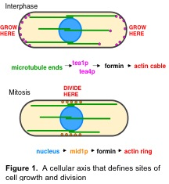

|

Our laboratory studies primarily the fission yeast Schizosaccharomyces pombe, an excellent simple model organism ideal for studying cellular morphogenesis. Fission yeast are rod-shaped cells that grow at the cell tips and divide in the middle. They are 8-14 microns in length and 4 microns wide. One feature that makes fission yeast so amenable for these studies on spatial control is that its shape, size and division habits are extremely reproducible. Therefore, it is possible to identify mutants that have aberrant cell shape, cell size or cell division patterns.
In S. pombe, we have developed a powerful system using a combination of approaches. Genetics in S. pombe allow us to identify and manipulate gene function and cellular processes, as well as to control cellular dimensions and shapes. With a S. pombe deletion library, we now can rapidly screen all the non-essential genes and for synthetic genetic interactions. As additional tools, we are also developing ways of physically manipulating live yeast cells. For instance, using laser microsurgery, we can instantaneously ablate or cut structures (Khodjakov et al., 2004). Using cell centrifugation, we can move the nucleus to different places in the cell (Daga and Chang, 2005). Development of microfluidic chambers allows us to finely control cell physiology and perturbations. We can manipulate the shape of cells by placing them into tiny cell molds (Minc et al., 2009a), or use these molds to orient cells vertically for imaging cytokinesis (Zhou et al., 2015). We work in close conversation with mathematicians, physicists and engineers. Development of quantitative computational models provides new insights and directions. Using this interdisciplinary approach, we hope to establish a quantitative understanding of key principles in cell morphogenesis.
Current Research Interests
Cytokinesis
- Placement of the cell division plane dictated by the position of the nucleus.
- Dynamic organization of actin, myosin and other components in the contractile ring.
- Mechanics of cell cleavage. Mechano-sensitive regulation of septum cell wall assembly and the contractile ring.
Microtubule regulation and function in nuclear positioning, cell polarity, and
chromosomal organization and repair
- Regulation of microtubule dynamics by XMAP215 and other microtubule plus end associated proteins.
- Regulation of cell polarization by microtubules and microtubule-associated proteins (tea proteins), Cdc42 and electrochemical signals such as pH.
- Effect of interphase cytoplasmic microtubules on chromosomal movement, organization and DNA repair inside the nucleus.
Regulation of cell size
- Mechanism of size regulation and sensing. Investigations of a potential sizer, Cdr2.
Cell morphogenesis
- Mechanism of forming rod-shaped cells. Modeling of fission yeast cell morphogenesis and division involving cell wall mechanics and turgor pressure. Genome-scale analyses of cell shape and growth.
Effect of cell shape on nuclear positioning and cytokinesis.
- Use of micro-fabricated chambers to manipulate cell shapes in sea urchin and fission yeast
|